Fest & dauerhaft
Implantologie
Implantate ersetzen fehlende Zähne fest und dauerhaft. Wir planen Ihre Versorgung genau und fertigen die Krone im eigenen Labor.
Moderne Zahnmedizin und Zahnersatz aus unserem eigenen Meisterlabor. Persönlich, schonend und ganz in Ihrer Nähe.
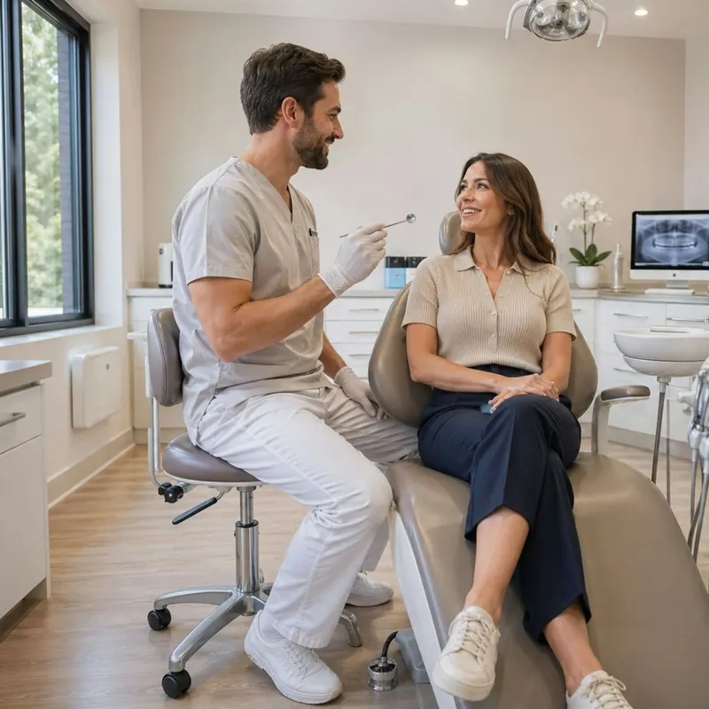
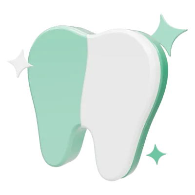
Willkommen bei Klar Zahn
Wir verbinden moderne Zahnmedizin mit Zahntechnik aus dem eigenen Meisterlabor. Persönlich, schonend und mit Zeit für Ihre Fragen, damit Sie sich bei uns rundum wohlfühlen.
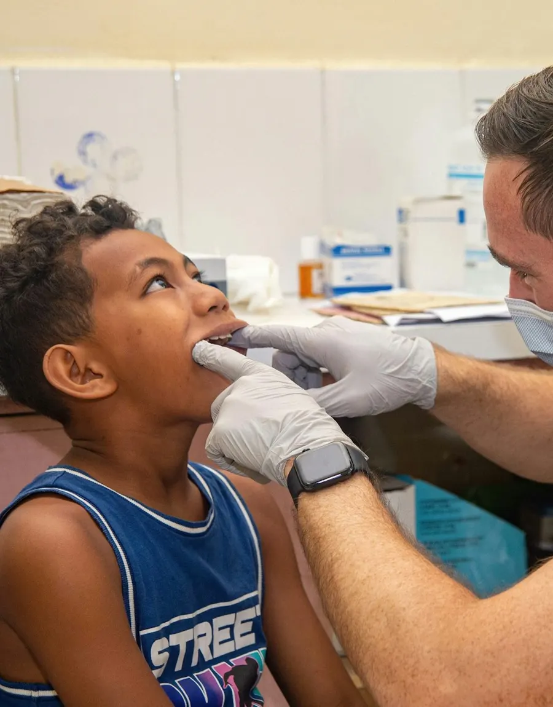
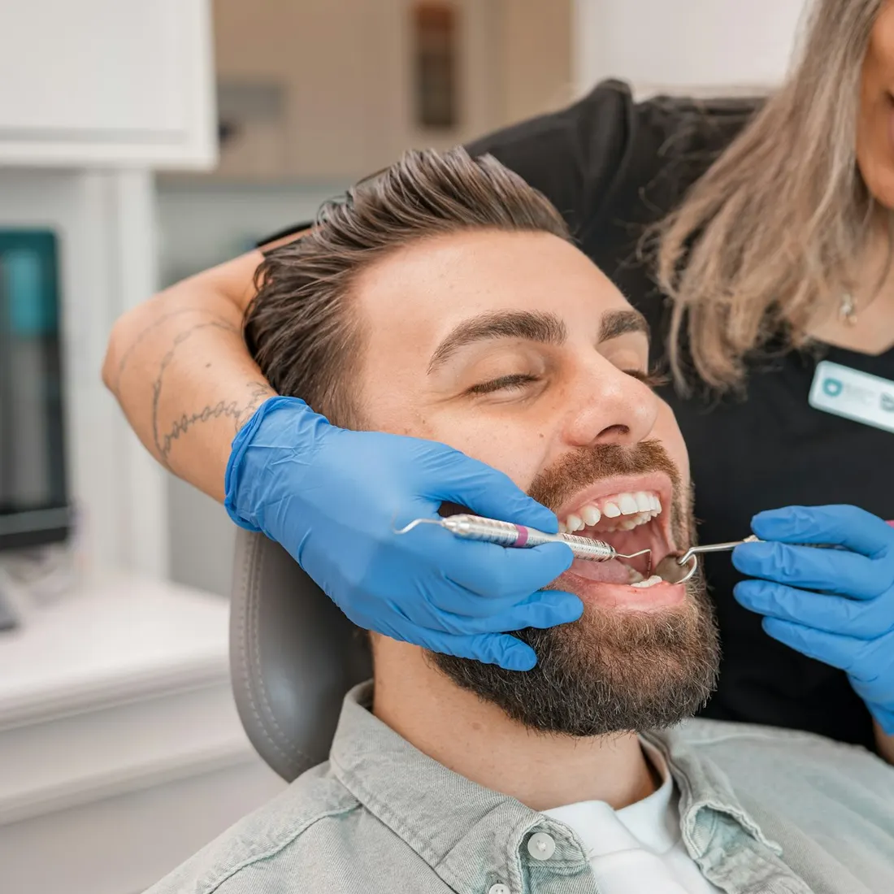
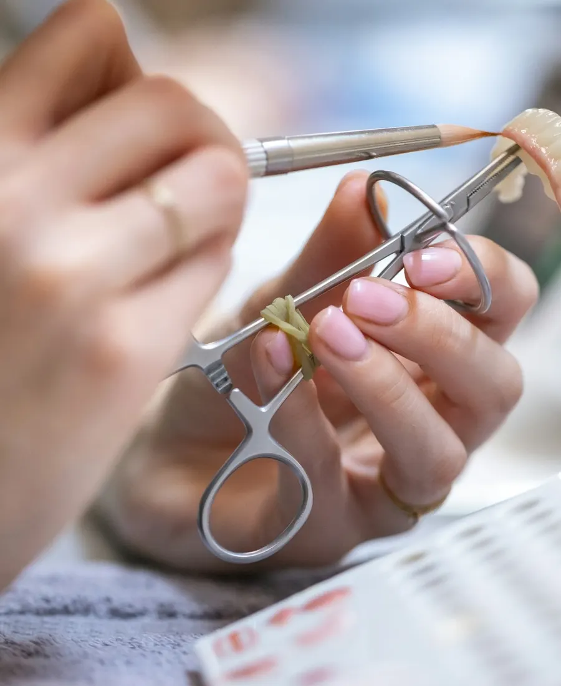
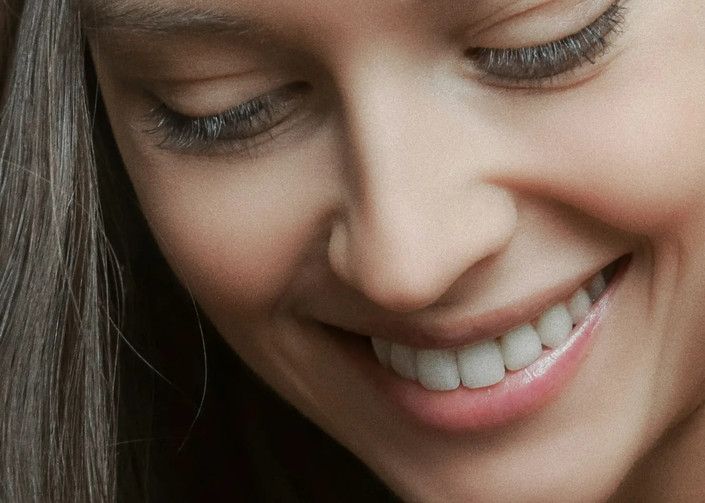
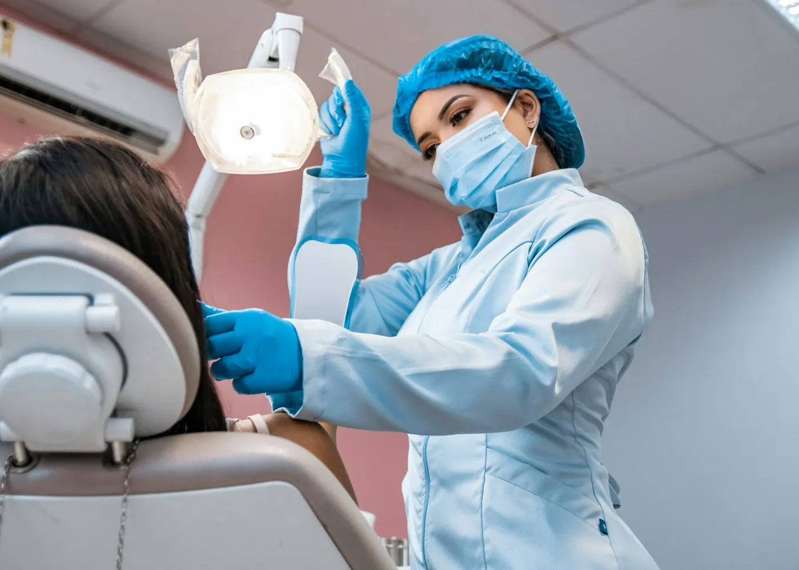
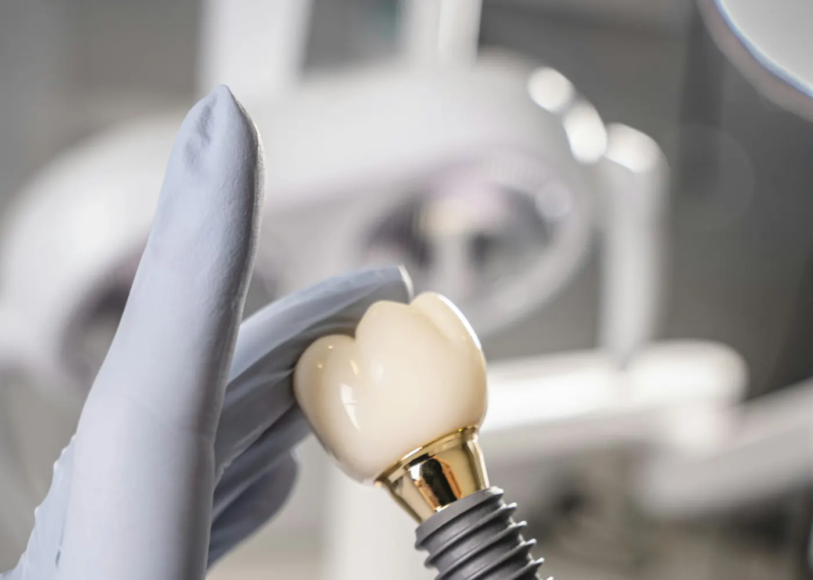
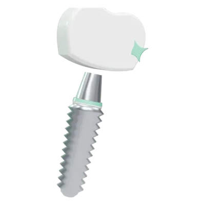
Unsere Leistungen
Von der Vorsorge über die Füllung bis zum Implantat: zwölf Leistungen, abgestimmt aufeinander und auf Sie.
Implantate ersetzen fehlende Zähne fest und dauerhaft. Wir planen Ihre Versorgung genau und fertigen die Krone im eigenen Labor.
Kronen, Brücken und Prothesen, die sich natürlich anfühlen und so aussehen.
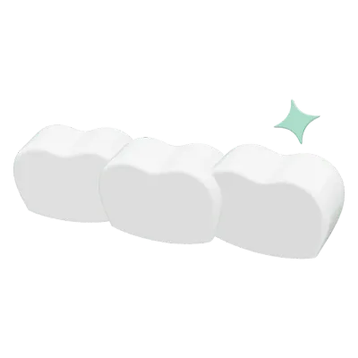
Gründliche Vorsorge und schonende Therapie für Ihre natürlichen Zähne.
Den entzündeten Zahn retten: Wir reinigen und verschließen die Kanäle sorgfältig.
Zahnarzt und Zahntechnikermeister arbeiten Tür an Tür: kurze Wege, präzise Passform, schnelle Reparaturen.
Mehr zum Labor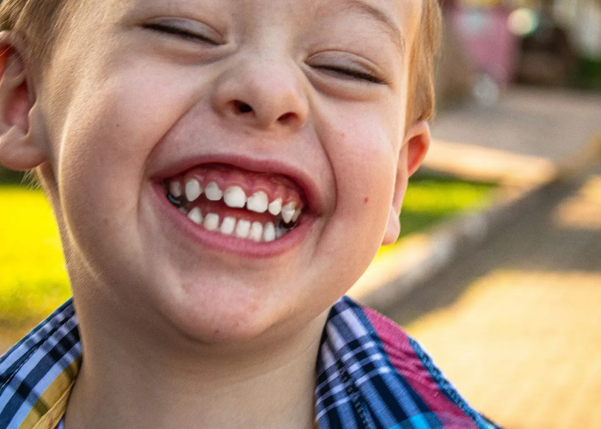
Wir nehmen uns Zeit, damit Kinder ohne Angst und gerne zu uns kommen.
Zahnfarbene, langlebige Füllungen, die kaum zu sehen sind.
Zahnentfernungen, auch von Weisheitszähnen, sorgfältig und schonend.
Für Angstpatienten, Kinder oder größere Eingriffe. Sie entspannen, wir kümmern uns um den Rest.
Form, Farbe und Harmonie Ihrer Zähne, abgestimmt mit unserem Meisterlabor.
Entfernt Beläge auch dort, wo die Zahnbürste nicht hinkommt.
Schutz bei Knirschen und Pressen, Entlastung für Kiefer und Muskeln.
Eigenes Meisterlabor
Kronen, Brücken, Prothesen und Implantatkronen fertigen wir selbst. Zahnarzt und Zahntechnikermeister stimmen sich direkt ab, ohne Umweg über ein externes Labor.
Der Zahntechniker sieht Ihr Lächeln selbst und trifft den Farbton genau. So fügt sich der neue Zahn natürlich ein.
Kurze Abstimmungswege zwischen Behandlungsstuhl und Labor sorgen für Zahnersatz, der von Anfang an gut sitzt.
Ist eine Prothese beschädigt, kümmern wir uns im eigenen Haus darum, ohne lange Versandwege.
Ein Team und feste Ansprechpartner, von der ersten Planung bis zum fertigen Zahn.
Beratung vereinbarenIhr Weg zu uns
Rufen Sie uns an unter 06105 / 23604. Gemeinsam finden wir einen Termin, der in Ihren Alltag passt.
Wir untersuchen Ihre Zähne gründlich, erklären den Befund verständlich und besprechen alle Möglichkeiten mit Ihnen.
Wir behandeln schonend und nach Plan. Zahnersatz entsteht in unserem Meisterlabor, und auch danach bleiben wir für Sie da.
Angstfrei behandeln
Viele Menschen haben ein mulmiges Gefühl beim Zahnarzt. Sprechen Sie uns darauf an: Wir nehmen uns Zeit, erklären jeden Schritt in Ruhe und behandeln Sie auf Wunsch im Dämmerschlaf oder in Vollnarkose.

Über uns
Herzlich willkommen bei Klar Zahn! Mir ist wichtig, dass Sie sich bei uns gut aufgehoben fühlen. Deshalb nehme ich mir Zeit für Ihre Fragen, erkläre jeden Behandlungsschritt verständlich und suche mit Ihnen die Lösung, die zu Ihren Wünschen passt.
Mit unserem eigenen Meisterlabor verbinden wir Zahnmedizin und Zahntechnik unter einem Dach. So entsteht Zahnersatz, der passt, hält und natürlich aussieht.
Ratgeber
Tipps und Antworten aus unserer Praxis, verständlich erklärt von Zahnarzt Mikel Salloum und seinem Team.
Alle ArtikelHäufige Fragen
Antworten auf Fragen, die uns Patientinnen und Patienten oft stellen.
Ihre Frage ist nicht dabei? Rufen Sie uns an, wir beraten Sie gerne.
06105 / 23604Sprechen Sie uns einfach darauf an. Wir nehmen Ihre Sorgen ernst, erklären jeden Schritt in Ruhe und machen bei Bedarf Pausen. Auf Wunsch behandeln wir Sie im Dämmerschlaf oder in Vollnarkose, sodass Sie von der Behandlung kaum etwas mitbekommen.
Ja, sehr gerne. Wir erklären Kindern alles spielerisch und gehen behutsam vor, damit der Zahnarztbesuch eine gute Erfahrung wird. Bei größeren Behandlungen ist auch eine Behandlung in Vollnarkose möglich.
Zahnarzt und Zahntechnikermeister arbeiten im selben Haus. Die Zahnfarbe kann direkt bei Ihnen bestimmt werden, Anpassungen gehen schnell, und Reparaturen müssen nicht erst an ein externes Labor geschickt werden.
Für die meisten Menschen sind ein bis zwei Termine im Jahr sinnvoll. Wie oft es in Ihrem Fall empfehlenswert ist, besprechen wir gemeinsam bei Ihrer Kontrolluntersuchung.
Zum Beispiel, wenn Sie nachts mit den Zähnen knirschen oder pressen, morgens Kiefer- oder Kopfschmerzen haben oder Ihre Zähne Abnutzungsspuren zeigen. Eine individuell gefertigte Schiene schützt die Zähne und entlastet die Kiefergelenke.
Rufen Sie uns während der Sprechzeiten unter 06105 / 23604 an. Wir bemühen uns, Ihnen so schnell wie möglich zu helfen. Außerhalb der Sprechzeiten wenden Sie sich bitte an den zahnärztlichen Notdienst.
Kontakt & Anfahrt
Opelstraße 2 in Mörfelden-Walldorf, gut erreichbar aus Mörfelden, Walldorf, Kelsterbach, Rüsselsheim, Groß-Gerau und Langen.
06105 / 23604| Montag | 09:00 – 13:00 · 14:00 – 18:00 |
|---|---|
| Dienstag | 09:00 – 13:00 · 14:00 – 19:00 |
| Mittwoch | 13:30 – 19:30 |
| Donnerstag | 09:00 – 13:00 · 14:00 – 18:00 |
| Freitag | 09:00 – 13:00 |
| Samstag | geschlossen |
| Sonntag | geschlossen |
Termine auch nach Vereinbarung.